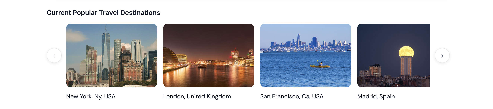

Existing flight tools assume fixed destinations or single round-trip routes, so travelers who want to explore multiple cities on a budget and within a loose time window end up planning manually, juggling many tabs, comparing prices, and checking feasibility. OptimaFly is a multi-city flight planner that reframes the problem. Users define their flexibility (when, how long, which cities matter), and the system returns ranked, cost-minimized itineraries that fit. This case study focuses on the design process and the product goal we set out to solve, helping users spend less time planning and more time deciding, which meant making that input model feel natural and the results easy to scan and act on.
The goal of OptimaFly was to help users spend less time planning and more time deciding. From a UX perspective, that meant
I built an initial full-stack version of OptimaFly to validate the core optimization workflow in a real product environment.
I ran usability testing with 10 student users to observe how they entered trip constraints, interpreted results, and compared itinerary options.
I synthesized recurring issues into user personas and behavior patterns, including differences in how users prioritized cost vs. convenience.
Based on testing, I revised input patterns, information hierarchy, and results layout to reduce confusion and improve scannability.
I shipped the updated interface directly in the product and continued improving responsiveness through backend optimization work.
Design was iterated directly in code with React and HTML/CSS, no separate Figma phase, so that layout, copy, and interaction could evolve in lockstep with the backend API and optimization logic. Focus was on a single primary flow, set constraints, run search, scan results and compare. Reducing steps and clarifying labels (e.g., “must visit” vs. “optional”) helped keep trip setup intuitive; result cards were structured to highlight total cost, dates, and leg count so tradeoffs were scannable at a glance.
We conducted 10 user interviews to observe how people entered trip constraints, interpreted results, and compared itinerary options. The persona we focused on is the student traveler. Students want to experience the world but are limited by budget, since many are not working yet, and constrained by time, such as school breaks. The design iterations below were shaped by this context and by what we learned in those interviews.
These iterations were driven by user interviews and testing, so the product better matches what users asked for and how they behaved. Key iterations addressed results readability and engagement.
Issue
Users could generate itineraries, but the results were not always easy to compare quickly.
Change
I redesigned the results layout to improve information hierarchy and make key details (e.g., timing and cost tradeoffs) easier to scan. Below, each screenshot is paired with the design choices behind it.
Image on the left. I added a short label next to each result number, e.g. “Best price”, “Alternative”, “Next cheapest”, “Different route”, so it’s clear at a glance which option is cheapest and which are alternatives. “Different route” is used when the user has two or more destinations, so they can see another path that might be more appealing despite a slightly higher cost.
Image on the left. When a user expands a result card, I added a “Compared to best” line (e.g. “+1h 5m more layover”) so they can quickly see what makes that option different from the cheapest one. I also surfaced the layover duration in this first-level expansion.
Both images below. Users in the interviews wanted to know exact details right away. For these screens, I focused on displaying the important details that are more specific so they could get that at a glance, like how many nights they’re staying, the airline they’ll be taking, where the layover is and how long it is, and clear times throughout, so the user isn’t left confused.
Why
Users were able to compare ranked options more efficiently and make decisions with less back-and-forth.
Issue
Signed-in users had no way to get recommendations tailored to them or to save and revisit suggestions.
Change
I added a recommendation system for users who sign in, so they get personalized suggestions and can build and manage their destination list.
Why
Signed-in users can now see recommendations that fit their context and return to ideas they’ve saved, which makes the product more useful for repeat use.
Issue
Without a way to surface suggestions to everyone, the product felt less exploratory for visitors who had not signed in.
Additional research
I referenced patterns from Booking.com, Expedia, and similar products when designing recommendations and result presentation.
Change
I added recommendations based on current top locations so that every user gets suggestions whether they have an account or not.

When a user hovers over a specific destination, a + sign shows up over the image, which has a slightly darker tint to indicate hover. If you click on it, the destination gets added to your list of destinations on top. This influences users to try out popular destinations and see if they work well with their route and fit within their budget.
Why
This makes the product more interactive and inclusive. The audience can explore popular routes and get ideas without signing in, which keeps the experience engaging from the first visit.